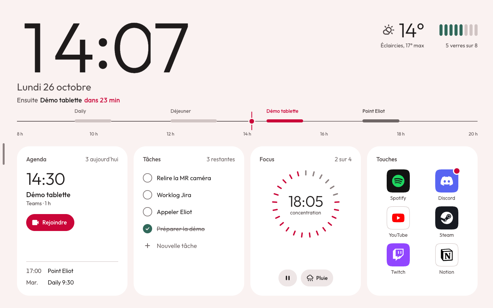
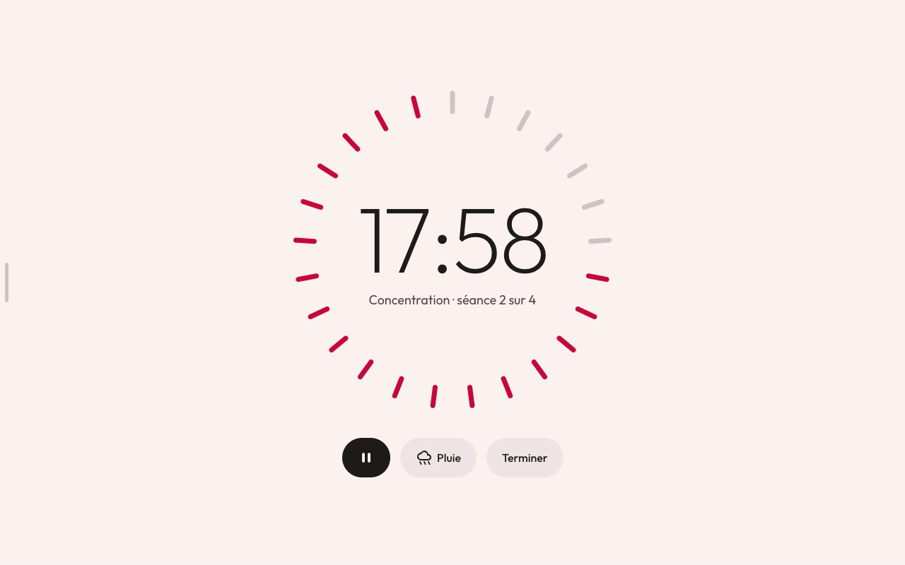
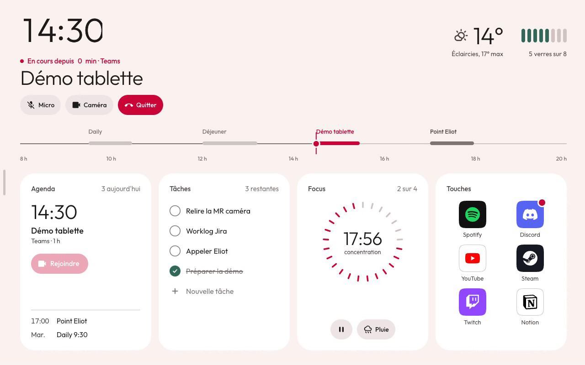
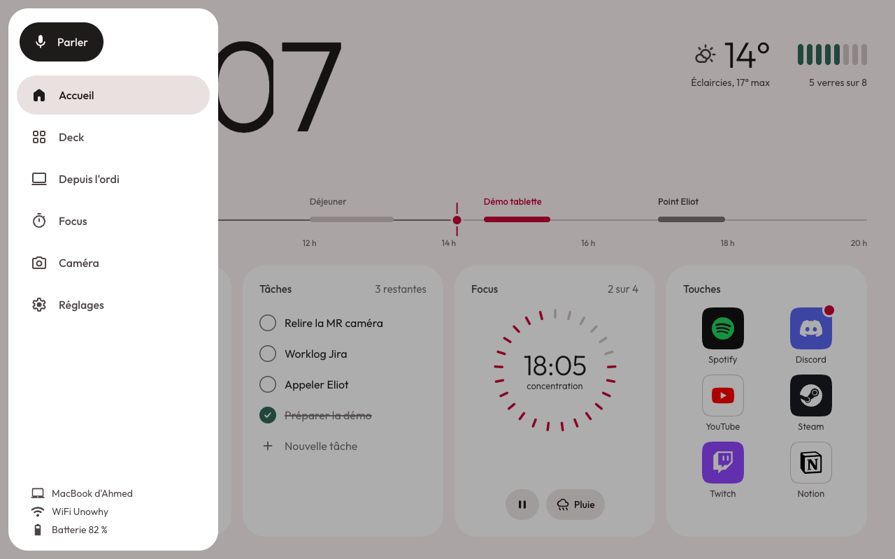

Deck
Lance une appli, envoie un raccourci, enchaîne une macro. Tu crées tes touches depuis la tablette. Toutes les fenêtres ouvertes de l'ordinateur sont sur un schéma de tes écrans : un toucher la met devant, un glissé la change d'écran.
Pour les équipes de bureau, sur Mac et Windows
Mate fait d'une tablette Unowhy 4.2 le deck de ton PC ou de ton Mac. Applis, son, micro, agenda : tout est sous la main, sans toucher à l'écran principal.
Mac, Apple Silicon et Intel · Windows 10 et 11, 64 bits

Lance une appli, envoie un raccourci, enchaîne une macro. Tu crées tes touches depuis la tablette. Toutes les fenêtres ouvertes de l'ordinateur sont sur un schéma de tes écrans : un toucher la met devant, un glissé la change d'écran.
Une console de mixage dessinée sur la tablette : la sortie, le micro et, sous Windows, un volume par appli. Tu enregistres des scènes et tu changes d'ambiance d'un geste.
Un chrono de concentration, une ambiance sonore qui suit le chrono, et Ne pas déranger activé sur l'ordinateur pendant la séance.
De 8 h à 20 h, le présent est un point rouge sur ta ligne du jour. Agenda relié à Microsoft, à Google ou à un lien ICS, tâches avec rappel, et un bouton pour rejoindre ta réunion Teams, Meet, Zoom ou Webex.
Vois quelles sessions Claude Code travaillent, attendent ou ont fini. Réponds à une question ou autorise une commande depuis la tablette. Sur Mac.



Lance l'installeur. Mate se relance tout seul à chaque ouverture de session.
Branche-la au même WiFi que l'ordinateur. Elle le trouve toute seule.
La tablette affiche un code à 6 chiffres. Tape-le sur la page qui s'ouvre sur l'ordinateur. C'est appairé.
Le programme s'affiche encore sous le nom Compagnon Unowhy. Il n'est pas encore signé : ton système te demande une confirmation la première fois.
Apple Silicon et Intel
Télécharger pour MacWindows 10 et 11, 64 bits
Télécharger pour WindowsNon. La tablette et l'ordinateur se parlent directement sur ton WiFi, en HTTPS, après un appairage par code. Il n'y a ni compte ni IA. Seule la météo interroge un service extérieur, MET Norway, sans clé.
Une tablette Unowhy 4.2, sous Android 10. Mate est écrit pour elle : léger, pensé pour rester branché sur le bureau.
Oui. Appaire chacun une fois, le bureau le jour et la maison le soir. La tablette passe seule à celui qui répond. Chaque ordinateur garde son agenda, ses tâches et son deck.